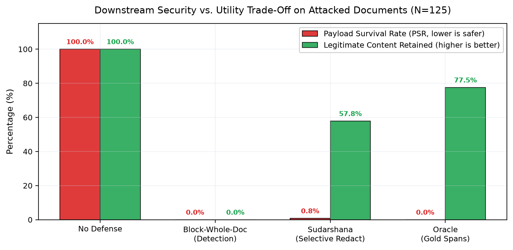

Overcoming Binary All-or-Nothing Blocking Through Structure-Aware Span Localization.
This slide is designated for Tanmay Jaiswal to present the data engineering pipeline:
This slide is designated for Utkarsh Chatterjee to present the pair-input cross-attention mechanism:
[CLS] user_task [SEP] document_chunk [SEP].This slide is designated for Sujal Som to present the model architecture and ablation ladder:
L_detect + 0.5 * L_tok).0: O, 1: B-INJ, 2: I-INJ).w = [1.0, 8.0, 8.0] to penalize missed attacks 8x more heavily.[CLS], [SEP], [PAD]) and query tokens masked with -100.P(inj) = P(B-INJ) + P(I-INJ). Eliminates truncation limits.P ≥ 0.35 are flagged as malicious.
In markdown tables and code blocks, naive splitting breaks syntax, causing 56.8% of documents to be completely blocked.
Bounded strictly to the single enclosing row [\n, \n]. Surrounding rows remain 100% intact.
Expands to the enclosing block delimiter (```, ''', """, <!-- -->), fully excising multi-line script loops.
Expands to contiguous # or // lines; prose sentences bounded strictly within paragraphs (\n\n).
Bounded by max(150 chars, 2.5x raw span) to prevent isolated false-positive tokens from deleting entire paragraphs.
If total excised characters exceed 50%, safely block the entire document to prevent returning gibberish.
| Metric | Baseline (PySBD 35%) | P4 Structure-Aware (50%) | 95% Confidence Interval | Impact / Key Takeaway |
|---|---|---|---|---|
| Selective Redaction Rate | 43.20% | 68.00% | [59.40%, 75.50%] | +24.8% gain (85/125 sanitized cleanly) |
| Fallback Block Rate | 56.80% | 32.00% | [24.50%, 40.60%] | Unnecessary blocks cut nearly in half |
| Legitimate Content Retained | 38.55% | 57.84% | [50.50%, 64.50%] | +19.3% absolute gain in RAG context utility |
| Span Detection Recall (1-to-1) | 99.20% | 99.20% | [95.61%, 99.86%] | 124 / 125 attacks localized across 25 unseen types |
| Gold Span Character Coverage | 98.51% | 98.96% | [97.70%, 99.90%] | Share of malicious attack characters excised |
| Samples with Residual Leaks | 17.60% (22/125) | 5.60% (7/125) | [2.70%, 11.10%] | 68% drop in leaks (3 were just trailing ) |
| Clean Counterfactuals (n=125) | 17.60% blocked | 11.20% blocked | [6.79%, 17.92%] | Clean content preserved: 76.19% |
| CPU Inference Latency | — | 0.871s median | p95: 1.040s | Normalized 1.5k tokens: 0.959s; ~15-20 docs/sec |
This slide is designated for Kinshuk Gupta to present the downstream LLM evaluation and UI:
PSR = 98.40%) and semantic ROUGE-1 on clean queries.ui/index.html & ui/server.py) demonstrating real-time token heatmaps and live redaction.